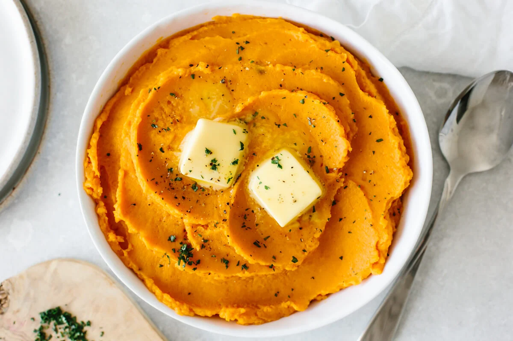

Nice and quick mashed sweet potato recipe

The perfect mashed sweet potato recipe
These garlic mashed sweet potatoes are a flavorful and comforting side dish that's perfect for any meal. Creamy and rich, they're a delicious way to get your daily dose of veggies.
Ingredients
- Sweet potatoes
- Heavy cream
- Sour cream
- Butter
- Garlic
- Salt
- Pepper
Preparation
- Add potatoes to a large pot of salted water. Place over medium/high heat and bring to a boil. Cook until fork tender, about 15-20 minutes.
- Drain, peel, and mash potatoes until they reach a smooth consistency.
- Add remaining ingredients to mash and mix to incorporate.
- Enjoy!